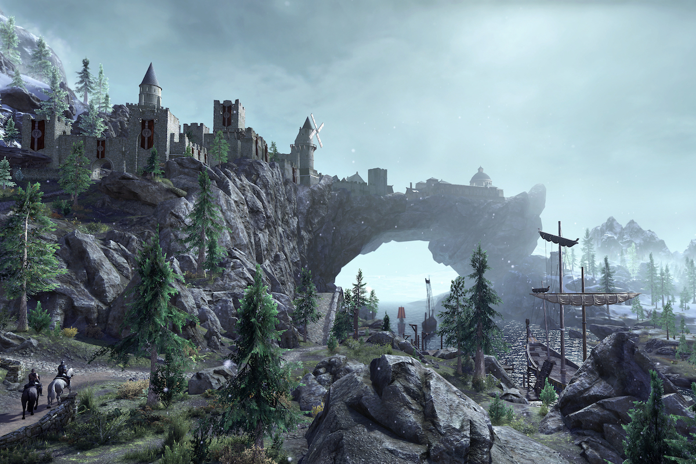
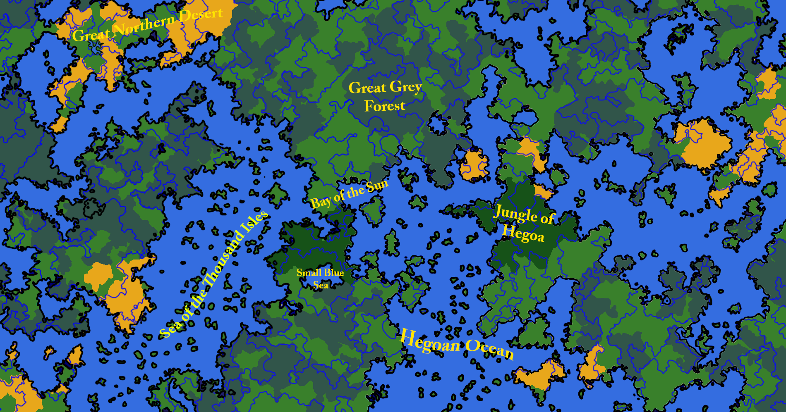
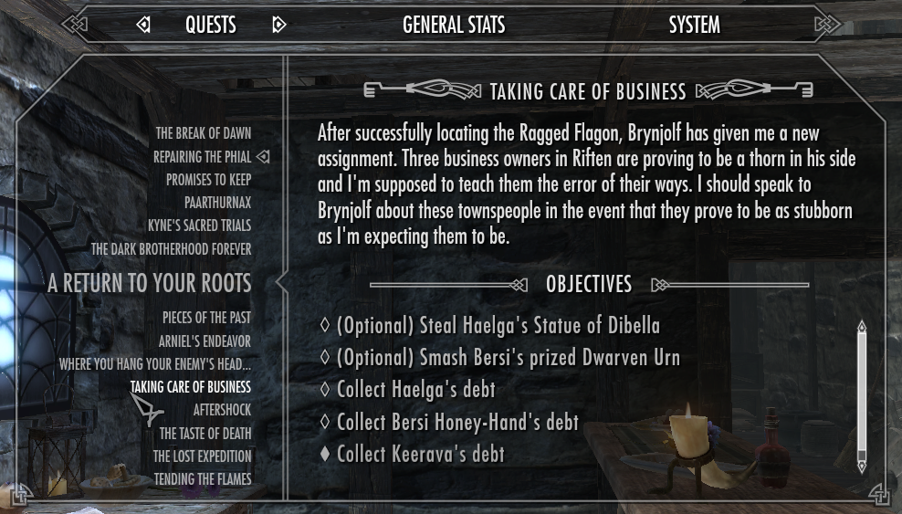
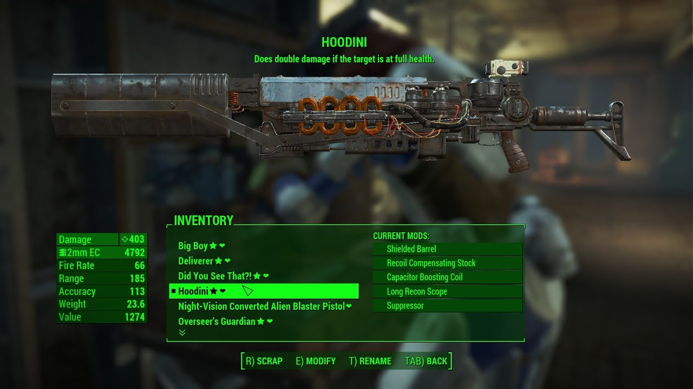
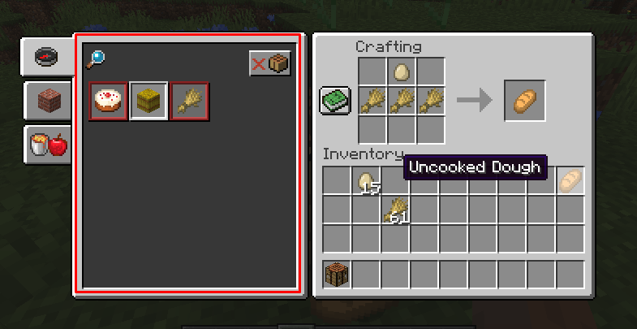
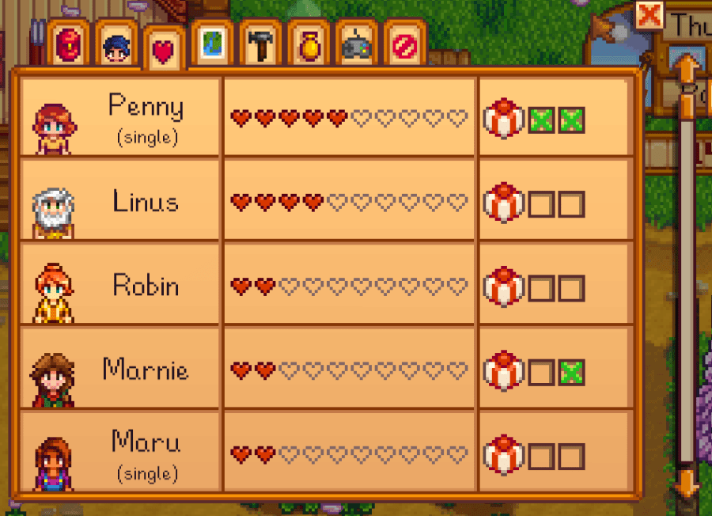
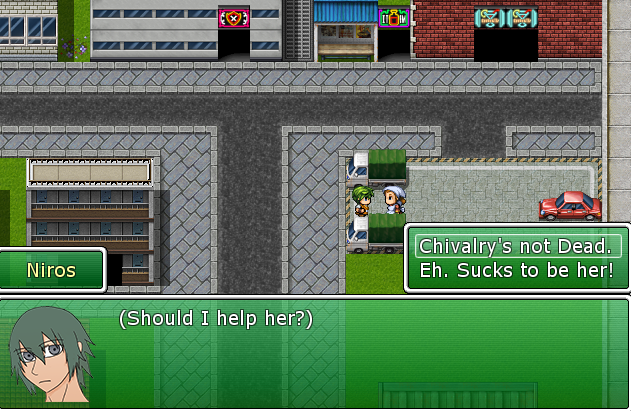

Project Idea
Project X
For our project idea, we have decided to conceptualize an Open World RPG game. Unlike conventional stories told in many popular video games, our game will follow a format of doing what you want instead of forcing yourself to be an integral part of what goes on In the world.
 You will start at a small town where you can choose to be what you want. A farmer, a merchant, an adventurer, or just a normal person living there. However, the world will not simply sit idly by and let you dawdle around. Randomly generated events are set to happen to give players incentive to do more beyond what they can do as staying in one spot will keep them stagnant and unable to deal with everything that the game throws at them. For example, say the player decides to stay in one town. Perhaps one of the other bigger cities in the world wants to invade them or bandits show up. At earlier moments in the game, perhaps they can deal with them. But these enemies can grow stronger with time. There will also be seasons and elapsing time that will cause certain events to happen. So the player is encouraged to explore and find things for themselves.
The game features a build and upgrade system take. Depending on what they want to do, they may gather items to build specific tools or weapons. Most of which will be stronger the farther they explore beyond the first point. Other items can be found being sold in towns or cities for a price or obtained when doing quests. Unlike a straightforward story for the main character, the player builds the character on the premise that they role play however they wish the character to be. Because they are using a custom character, they may approach each questline they encounter differently. And most do not follow the logic that the character was directly involved. Players may choose to involve themselves or simply ignore what they do. However, quests and dialogue all have branching effects. Depending on how their actions are played out, the results can vary. NPCs are also another different approach we are thinking of implementing.
 Instead of just the standard radiant NPC, we wanted to make them seem come to life and create a friendship system. Further increasing your friendship with NPCs will help you gather special bonuses and forge valuable connections that will prove useful for you in one way or another. You may also choose to neglect these friendships or make enemies simply because you don’t like them and things can branch out in many different ways. For example, if you had become friends with a merchant, you will be entitled to discounts and access to their special items that they don’t offer to anyone else. You can be friends with the town guard who will walk around your house when you’re away to keep an eye on it. Maybe you hate the town bard and decide to insult him and form a rivalry. The bard will sing harsh music about you and gossip about how much of a jerk you are. Perhaps you saw the bartender hoarding the good stuff and calling him out on it. You’ll be barred from his establishment until you manage to even fix that relationship. NPCs, even if named, tend to be faceless people that don’t matter unless they have quests or items to offer. By making sure the NPCs are all important in a way, it makes it ss if you’re really making friends in this game. But be careful, as you can’t satisfy anyone. And these NPCs also have people they like or dislike. By befriending someone, you are effectively on someone else’s blacklist. Befriending both will be tough to do.
 To sum our project up, we’d like to make a game that will make the player feel as if they are the ones in the story and that whatever they involve themselves in will make an impact on whatever happens in the world.